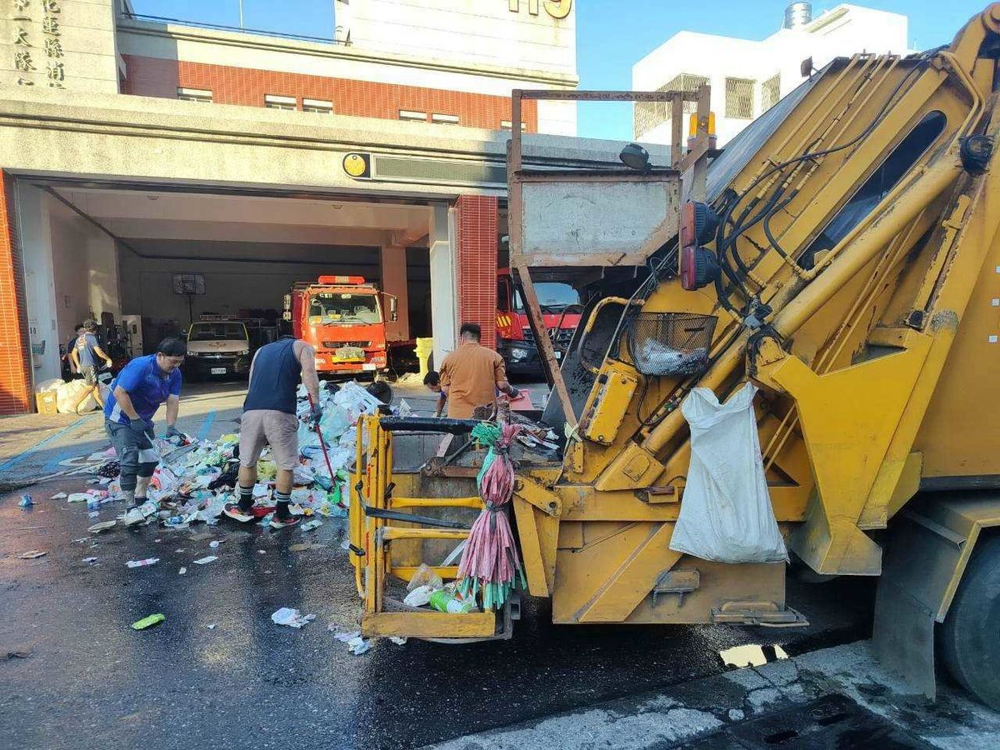

吉安一日驚傳兩起資收車起火 疑鋰電池受擠壓釀災 游淑貞籲落實垃圾分類

可樂電子報小編/編輯
花蓮縣吉安鄉清潔隊於昨（28）日執行資源回收作業期間，接連發生兩起資源回收車後斗冒煙起火的驚險案件。經初步清理、翻找及現場調查，起火原因疑為民眾未落實垃圾分類，將含鋰電池的小型家電、廢棄電池及高壓瓦斯空瓶混入一般回收物，導致回收車在壓縮作業時受擠壓引發短路、發熱甚至悶燒。所幸清潔隊員應變處置得宜，兩起事故均未造成人員傷亡與車輛重大受損。

首起事故發生於28日下午4時02分，仁里區資源回收車在南埔十三街執行定時定點收運任務時，隨車人員察覺後斗突然冒出濃煙。隊員立即啟動應變SOP，於4時05分迅速將車輛駛入鄰近的仁里消防分隊，並將車內回收物傾倒至空地，由消防同仁迅速射水降溫滅火，順利撲滅火源，車輛僅受輕微損傷，隨後迅速恢復收運作業。

未料同日晚間7時13分，另一輛資源回收車在執行收運作業途中，後斗再度發生冒煙狀況。清潔隊員保持高度警覺，第一時間將車輛開往仁里消防分隊求援，由值班消防同仁迅速查找火源並沖水降溫，及時化解危機，未釀成人員傷亡或更大火勢。

吉安鄉清潔隊指出，近年行動電源、鋰電池及各類攜帶式電子產品普及，廢棄電池及充電式小家電若未落實單獨分類，一旦混入一般回收物經車輛擠壓，極易因內部結構受損而短路起火；此外，瓦斯罐等高壓容器及祭祀後的香灰金紙亦具危險性。吉安鄉長游淑貞呼籲，垃圾分類攸關第一線隊員的生命安全，民眾處理廢電池及小型電器務必分開交付，瓦斯罐也應排空單獨回收。未依規定分類者依法可處1,200元至6,000元罰鍰，期盼鄉親多一分細心，共同守護清潔隊員的作業平安。
▶ 延伸觀看
📺 相關報導影片：點此於 YouTube 觀看完整報導